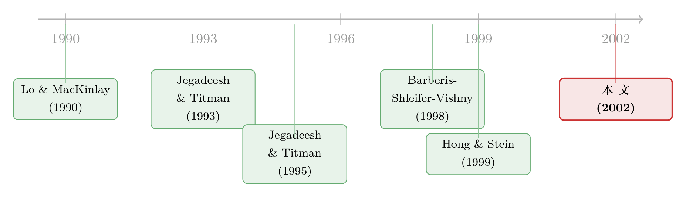

负的协方差，凭什么就证明了「过度反应」？
本文读的是 Chen & Hong (2002, RFS) 对 Lewellen「Momentum and Autocorrelation in Stock Returns」一文的评论：他们用一个最简单的单因子模型说明，仅凭「自协方差与交叉序列协方差平均为负」根本推不出动量来自过度反应——这些负号其实是被样本内市场因子的序列相关「染」出来的；换一把 Jegadeesh-Titman 的尺子重新分解，规模、行业、账面市值比组合里的动量，反而几乎全部来自价格的「续涨」，即欠反应。
1 一个看起来无懈可击的推论
先把舞台搭好。
动量 (momentum) 这件事，本身已经不新鲜了。Jegadeesh and Titman (1993) 早就记下：买过去 3 到 12 个月里涨得好的股票、卖过去跌得惨的股票，未来能赚到显著为正的收益；这个现象不只在美国成立，国际市场上也一路成立 [如 Rouwenhorst (1998)]。真正让人头疼的，从来不是「有没有动量」，而是「动量到底是谁干的」。（关于这条主线，本博客此前评述过被讨论的原文，见《动量到底是谁在续命？》。）
被讨论的这篇文章（下称「原文」，作者 Lewellen）给出了两组发现。第一组是把动量从个股推广到组合：原文发现规模 (size) 与账面市值比 (book-to-market) 组合也有动量，量级和个股、行业的动量相近，但又是各自独立的一种。这一条没什么争议，是给「动量风格化事实」清单又添了两笔。
真正引爆讨论的是第二组。原文搬出了 Lo and MacKinlay (1990) 的一个观察：一个动量策略的期望利润，可以拆成三个来源——
一，某只股票一直跑赢，可能只是因为它的无条件均值本来就高（这一项早已被文献否决）；二，它的收益正自相关，自己的过去预测自己的未来（这是「续涨」，是欠反应的标志）；三，它的收益与别人股票的滞后收益负相关（负的交叉序列协方差），别人跌得惨预示了它将来涨得好（这是「别人过度反应、它没有」的标志）。
然后原文动手算了：对行业、规模、账面市值比这三套组合，平均自协方差 (autocovariance) 略微为负，平均交叉序列协方差 (cross-serial covariance) 更负一些（尽管统计上都不太显著）。于是原文下了两个结论：
结论一：平均自协方差为负，说明动量不是「赢家继续赢、输家继续输」，因此与 Barberis, Shleifer, and Vishny (1998)、Hong and Stein (1999) 这类欠反应的行为模型不符（这些模型都要求收益正自相关）。结论二：动量来自「未来收益与别人的滞后收益负相关」，因此支持过度反应假说——某些股票对共同因子反应过度，另一些没有。
听上去顺理成章，对不对？负的自协方差，似乎天然就否定了「续涨」；负的交叉序列协方差，似乎天然就坐实了「过度反应」。
但 Chen and Hong (2002) 的整篇评论，就是要把这套「顺理成章」一刀劈开。他们的主张只有一句话：Lo-MacKinlay 分解里那些协方差的符号，根本不能用来识别动量的经济来源。 接着，他们用一个简单到几乎没有自由度的模型，把这句话证给你看。
2 一个「纯欠反应」的世界，却长出了负的协方差
要反驳「负协方差 ⇒ 过度反应」，最干净的办法是什么？
是造一个只有欠反应、绝无过度反应的世界，然后看它的协方差是正是负。如果在这个世界里也能算出负的自协方差和负的交叉序列协方差，那原文的推论就不攻自破了。
于是他们设定了一个单因子结构。假设有 \(N\) 只股票（就当成 \(N\) 个行业组合），满足
$$f_t = \rho\, f_{t-1} + e_t$$
$$r_{i,t} = \mu_i + \beta_i f_t + \epsilon_{i,t}$$
这里 \(e_t\) 是均值为零、序列不相关的因子冲击；\(\epsilon_{i,t}\) 是均值为零、正序列相关的特质冲击，方差为 \(\sigma^2_\epsilon\)，且
$$E[\epsilon_{i,t}\,\epsilon_{i,t-1}] = \phi\,\sigma^2_\epsilon > 0$$
因子 \(f_t\) 的无条件方差是 \(\sigma^2_f\)，\(\rho\) 是因子的序列相关系数（把 \(f_t\) 想成去均值后的市场因子）。其余所有相关、序列相关、交叉序列相关一律设为零。再把每只股票的均值和 beta 都拉平：\(\mu_i=\mu\)，\(\beta_i=\beta=1\)。
注意这个设定的精妙之处：按构造，这个世界里动量利润的唯一来源，就是那个 \(\phi>0\)——特质冲击的正自相关，也就是一种「行业层面的欠反应」。这里没有任何「过度反应」，因子也好、特质也好，没有谁会反应过头。
接着，一个自然的问题是：在这个纯欠反应的世界里，Lo-MacKinlay 分解会算出什么？
先验证动量利润确实来自 \(\phi\)。动量策略在 \(t-1\) 期按收益排序、\(t\) 期持有，分配给股票 \(i\) 的权重是
$$w_{i,t} = \frac{1}{N}\left(r_{i,t-1} - r_{t-1}\right)$$
其中 \(r_t = \frac{1}{N}\sum_{i=1}^N r_{i,t}\) 是等权指数收益。这是个零成本组合（赢家做多、输家做空，净投资为零）。\(t\) 期利润为
$$\pi_t = \sum_{i=1}^N w_{i,t}\, r_{i,t}$$
把单因子结构代进去，权重可以化简为
$$w_{i,t} = \frac{N-1}{N^2}\,\epsilon_{i,t-1} - \frac{1}{N^2}\sum_{j\neq i}^N \epsilon_{j,t-1}$$
——因为 \(\mu\) 和 \(\beta\) 都拉平了，排序里那个共同因子 \(f_{t-1}\) 在「自己减去指数」时被减掉了，剩下来真正决定谁是赢家、谁是输家的，只有特质冲击 \(\epsilon_{i,t-1}\)。于是利润
$$\pi_t = \sum_{i=1}^N\left(\frac{N-1}{N^2}\,\epsilon_{i,t-1} - \frac{1}{N^2}\sum_{j\neq i}^N \epsilon_{j,t-1}\right) r_{i,t}$$
取期望，所有交叉项归零，只剩下 \(\epsilon_{i,t-1}\) 和 \(\epsilon_{i,t}\) 的自协方差，得到
$$E[\pi_t] = \frac{N-1}{N}\,\phi\,\sigma^2_\epsilon$$
干净利落：期望动量利润只取决于 \(\phi\sigma^2_\epsilon\)，也就是特质冲击的正自协方差。它和 \(\rho\)（因子的序列相关）半点关系都没有。这完全符合我们的构造——这个世界里赚钱的唯一引擎就是欠反应。
3 同一笔利润，被分解成了一对负数
然后，真正关键的一步来了。我们把同样这个世界，丢进 Lo-MacKinlay 的三项分解里。
Lo and MacKinlay (1990) 证明，期望动量利润满足一个恒等式：
其中三项分别是
$$\sigma^2_\mu = \frac{1}{N}\sum_{i=1}^N (\mu_i - \bar\mu)^2$$
$$O = \frac{N-1}{N^2}\sum_{i=1}^N E\!\left[r_{i,t}\,r_{i,t-1} - \mu_i^2\right]$$
$$C = E[r_t\, r_{t-1}] - \bar\mu^2 - \frac{1}{N^2}\sum_{i=1}^N E\!\left[r_{i,t}\,r_{i,t-1} - \mu_i^2\right]$$
把单因子例子代进去。第一项 \(\sigma^2_\mu=0\)（均值全拉平了，意料之中）。然后是两项要命的结果：
$$O = \frac{N-1}{N}\,\rho\,\sigma^2_f + \frac{N-1}{N}\,\phi\,\sigma^2_\epsilon$$
$$C = \frac{N-1}{N}\,\rho\,\sigma^2_f$$
你看出门道了吗？
把它们相减：\(\sigma^2_\mu + O - C = \frac{N-1}{N}\phi\sigma^2_\epsilon\)，正好等于前面算出的 \(E[\pi_t]\)。恒等式当然成立——但代价是 \(O\) 和 \(C\) 各自都被塞进了一个 \(\rho\sigma^2_f\) 项。
这个 \(\rho\sigma^2_f\) 从哪来？它纯粹是市场因子的序列相关。动量利润根本不依赖 \(\rho\)，可是为了让恒等式两边配平，\(O\) 和 \(C\) 这两个分量必须把因子的序列相关吸收进去。于是反转出现了：
如果样本期内因子的自相关 \(\rho>0\)，那么 \(O\) 和 \(C\) 都为正；如果 \(\rho\) 足够负，那么 \(O\) 和 \(C\) 都为负。而无论 \(\rho\) 是正是负，动量利润 \(\frac{N-1}{N}\phi\sigma^2_\epsilon\) 始终为正、始终来自欠反应，纹丝不动。
换句话说，原文看到的「负的自协方差、负的交叉序列协方差」，完全可能只是因为样本里市场因子恰好负自相关——而不是因为有任何股票过度反应。负号是 \(\rho\) 染上去的颜料，不是过度反应的指纹。
由此他们提了两条结论：第一，Lo-MacKinlay 分解一般而言不能告诉你动量利润的经济来源；第二，由欠反应驱动的动量，完全可以伴随负的自协方差与负的交叉序列协方差。原文那个「顺理成章」的推论，就这样塌了。
4 不是空谈：把美国数据塞进同一个公式
模型再漂亮，也得对得上数据。这一步是整篇评论里最有杀伤力的。
他们按 Moskowitz and Grinblatt (1999) 的两位数 SIC 分类，构造了 20 个价值加权行业组合，用过去 6 个月收益、每年 1 月和 7 月换仓做动量策略，算出半年度利润：1941–1999 年是 0.072%，1928–1999 年是 0.064%，t 值分别为 2.44 和 2.02，量级与原文报告的相近，两个时期几乎一样大。
关键在那一列 \(\rho\)——他们同时报告了市场因子（价值加权 CRSP）的六个月序列相关：1941–1999 年是 −0.04，1928–1999 年是 0.08。一负一正。
接着看 Lo-MacKinlay 分解（Panel B）：1941–1999 年，\(\rho<0\)，于是 \(O=-0.065\%\)、\(C=-0.133\%\)，双双为负；1928–1999 年，\(\rho>0\)，于是 \(O=0.209\%\)、\(C=0.149\%\)，双双转正。模型预言的「符号跟着 \(\rho\) 走」，被数据一字不差地兑现了。他们还复制了原文 Table 6 里不同期限的交叉序列协方差，量级与 \(C=\frac{N-1}{N}\rho\sigma^2_f\) 的预测吻合。结论很扎心：原文相当一部分发现，是被样本内市场的负自相关驱动的，而非什么过度反应机制。
那正确的尺子是什么？他们转向 Jegadeesh and Titman (1995)。设股票服从一个允许滞后因子载荷的结构：
$$r_{i,t} = \mu_i + b_{0,i}\, f_t + b_{1,i}\, f_{t-1} + \epsilon_{i,t}$$
这里 \(f_t\) 是未预期到的因子实现，\(b_{0,i}\)、\(b_{1,i}\) 分别是股票 \(i\) 对当期与滞后因子的敏感度。普通多因子模型只有 \(b_{0,i}\)；多出来的 \(b_{1,i}\neq 0\) 才是「过度反应」的载体。想象只有 A、B 两个行业，\((b_{0,A}=1.3,\,b_{1,A}=0)\) 而 \((b_{0,B}=0.9,\,b_{1,B}=-0.1)\)：B 对因子冲击反应过头，下一期会反向修正，于是「买赢家卖输家」之所以赚钱，正是因为 B 的过度反应。
这个结构下，Jegadeesh-Titman 把期望利润分成另外三块：
$$E[\pi_t] = \sigma^2_\mu + \Omega + \delta\,\sigma^2_f$$
$$\Omega = \frac{N-1}{N^2}\sum_{i=1}^N \mathrm{cov}\!\left(\epsilon_{i,t},\,\epsilon_{i,t-1}\right)$$
$$\delta = \frac{1}{N}\sum_{i=1}^N \left(b_{0,i} - \bar b_0\right)\!\left(b_{1,i} - \bar b_1\right)$$
这一回，分工清清楚楚：\(\Omega\) 是特质自协方差，量的是「自己续涨」——欠反应；\(\delta\sigma^2_f\) 是对共同因子的差异化过度反应——上面 A、B 的例子里 \(\delta>0\)。如果过度反应真是动量的主力，那 \(\delta\sigma^2_f\) 就该扛起利润的大头。
他们对那 20 个行业组合做了这个分解（Panel C），用去均值的价值加权 CRSP 当因子代理，估出每个组合的 \((\mu_i, b_{0,i}, b_{1,i})\)。结果两个时期惊人地一致：\(\Omega>0\) 并且几乎贡献了全部利润（1941–1999 年 \(\Omega=0.094\%\)，1928–1999 年 \(\Omega=0.067\%\)），而交叉序列项 \(\delta\sigma^2_f\) 趋近于零（分别为 −0.001% 和 0.015%）。
于是结论彻底反转：行业、规模、账面市值比组合里的动量，几乎全来自价格的续涨——和欠反应模型一致，而不是原文主张的过度反应。原文那个负的交叉序列协方差，是 \(\rho\) 的影子，不是经济机制。
5 为什么这场争论值得记下
退一步看，这篇短短九页的评论，真正的贡献不在于「站了行为模型的队」，而在于戳破了一种方法论上的幻觉：把一个会计恒等式里某一项的符号，当成了对经济机制的检验。
Lo-MacKinlay 分解是一个恒等式——它对任意收益过程都成立。恒等式的好处是永远不会错，坏处是它什么也没识别：同一笔由欠反应产生的利润，既可以被分解成「正 \(O\)、正 \(C\)」，也可以被分解成「负 \(O\)、负 \(C\)」，全看样本里因子的自相关碰巧是正是负。用它的分项符号去判断「欠反应还是过度反应」，就像用温度计的刻度去判断病人得的是感冒还是肺炎——刻度是真的，推断是空的。Jegadeesh-Titman 分解之所以更可信，是因为它把「续涨」和「差异化过度反应」显式地写成了两个不同的结构参数 \(\Omega\) 与 \(\delta\)，而不是让它们在一个恒等式里互相借位。
这件事的味道，和本博客评述过的另一篇讨论文很像——《能解释一切的理性，恰恰什么都证伪不了》：一个永远成立、永远能配平的框架，恰恰因为「永远对」而失去了证伪力。
6 文献脉络
把这条线捋一捋，它其实是一场「识别工具」的接力。
最上游是两件工具。Lo and MacKinlay (1990) 给出了把逆向/动量利润拆成均值、自协方差、交叉序列协方差的恒等式——这是原文据以立论的武器；Jegadeesh and Titman (1993) 则用「买赢家卖输家」把动量本身钉成了一个无法回避的事实。
接着，一个自然的问题是「动量是欠反应还是过度反应」。两派理论几乎同时登场：Barberis, Shleifer, and Vishny (1998) 与 Hong and Stein (1999) 主张欠反应（信息缓慢扩散，价格续涨）；而原文借 Lo-MacKinlay 的负协方差倒向过度反应。但真正提供「干净尺子」的，是 Jegadeesh and Titman (1995)——他们用滞后因子载荷把过度反应单列成一个可估的 \(\delta\)。

本文 Chen and Hong (2002) 站在这条线的交汇点上：它不提出新理论，而是用模型 + 数据证明上游那把旧尺子（Lo-MacKinlay 分项符号）量错了，再换上 Jegadeesh-Titman 的尺子重新读数，把结论从过度反应扳回欠反应。它和后续 Hong, Lim, and Stein (1998)（动量利润随公司规模、分析师覆盖下降）一道，构成了「欠反应/信息缓慢扩散」一派的实证支撑。沿着这条「谁在驱动动量」的实证追问，本博客还评述过把成交单按规模拆开来看的《动量到底是谁干的？》，以及质疑动量利润可交易性的《动量利润的「纸面富贵」》。
7 评论与延伸（Q&A + 研究方向）
(a) 几个可能的疑问
Q：原文的协方差估计本来就「统计上不显著」，那这场争论是不是无关紧要？
不是。Chen-Hong 在开篇就承认了显著性问题，但他们的论点更深一层：即便协方差估得很精确，分项的符号也不能识别机制。显著与否是统计问题，能不能识别是方法论问题——后者就算样本无穷大也不会自动解决。
Q：他们的单因子模型会不会是「特意造出来」让 \(O\)、\(C\) 为负的？
恰恰相反。模型里唯一的利润来源是 \(\phi>0\) 的欠反应，过度反应被完全排除；\(O\) 和 \(C\) 的符号不是手调的，而是被恒等式逼出来、跟着自由参数 \(\rho\) 走的。模型的自由度极低，这正是它说服力的来源。
Q：\(O\) 和 \(C\) 里那个 \(\rho\sigma^2_f\) 到底是怎么混进去的？
因为动量策略在排序时用「个股收益减指数收益」，理论上能消掉共同因子。但 \(O\)（按定义只看个股自协方差）会吃进因子的自相关 \(\rho\sigma^2_f\)，\(C\)（按定义含指数自协方差）也吃进同样一项。两者都含 \(\rho\sigma^2_f\)，相减时抵消，所以利润不依赖 \(\rho\)——可它们各自的符号却被 \(\rho\) 牵着走。
Q：为什么 Jegadeesh-Titman 分解就「更对」？它不也是个分解吗？
区别在于它把「续涨」(\(\Omega\)) 和「差异化过度反应」(\(\delta\sigma^2_f\)) 对应到两个结构参数，而不是让它们在一个恒等式里彼此借位。\(\delta\) 直接度量 \(b_{0,i}\) 与 \(b_{1,i}\) 的横截面协变——过度反应有没有，它说了算，不会被因子自相关污染。
Q：这是不是说「过度反应」在动量里根本不存在？
不能这么说。结论只是：在行业、规模、账面市值比组合、用 CRSP 当因子代理的设定下，\(\delta\sigma^2_f\approx 0\)，过度反应不是主力。换个资产、换个因子代理，故事未必照搬。它否定的是「用负协方差证明过度反应」，不是「过度反应从不存在」。
Q：\(\sigma^2_\mu\) 那一项为什么可以一直忽略？
因为「高均值股票一直赢」这条来源（Conrad and Kaul 1998 曾强调）在后续文献里被反复否决；数据上 \(\sigma^2_\mu\) 只有
0.004%，相对0.07%的利润几乎可忽略。横截面期望收益差异不是动量的重要成因，这一点这篇评论也再次印证。
(b) 几个可能的研究问题与提案
-
把这套「分解会骗人」的警告搬到公司债动量上。 【经济故事】公司债同样有动量，且债券对共同因子（利率、信用利差）的暴露往往正自相关——正是 \(\rho>0\) 的温床。若直接套 Lo-MacKinlay 分解，很可能误读出「正的交叉序列协方差 ⇒ 续涨」，而真实机制未必如此。 【可行性】中。数据可用（TRACE 成交 + 债券因子），识别上需先估出信用/利率因子的样本内序列相关，再做 Jegadeesh-Titman 式的滞后载荷分解。难点是债券交易稀疏、收益测量噪声大，\(\Omega\) 与 \(\delta\) 的估计误差会偏大。
-
用外资持有人作为「谁过度反应」的横截面切口。 【经济故事】Jegadeesh-Titman 的 \(\delta\) 要求股票间 \(b_{1,i}\) 有差异。一个自然假说：信息处理较慢或较快的投资者群体，会让对应股票的滞后因子载荷系统性偏移。若外资占比高的股票其 \(b_{1,i}\) 更接近零（反应更及时），就能把「谁过度/欠反应」与持有人结构挂钩。 【可行性】中。需股票层面的外资持股（如 FactSet/EMDB 可投资度）与因子载荷估计；识别靠持股结构的外生变动（指数纳入、可投资度调整）。挑战是 \(b_{1,i}\) 估计精度低，需大样本和长窗口。
-
检验「\(\rho\) 染色」是否能解释动量在时间序列上的崩溃。 【经济故事】动量偶尔遭遇剧烈反转（momentum crash）。如果一部分「动量」其实是 \(\rho\sigma^2_f\) 在协方差分项里的影子，那么市场因子序列相关 \(\rho\) 由正转负的时点，应当与分解读数的符号翻转、乃至策略表现的拐点系统相关。 【可行性】高。只需滚动估计 CRSP 的 \(\rho\) 与滚动动量利润，做时序回归。数据现成、识别直接，是个低成本的描述性检验，可作为更大课题的入口。
-
把流动性维度加进来：负协方差里有多少是「非同步交易」？ 【经济故事】组合层面的交叉序列协方差，历史上一部分来自非同步交易/价格滞后，而这与流动性高度相关。若把行业组合按流动性分层重做分解，\(C\) 的负值在低流动性层里应当更大——这能把「机制之争」与「流动性伪迹」分开。 【可行性】中高。数据用 CRSP + 流动性指标（Amihud 等）；识别靠按流动性分组的横截面对比。doable，且与本博客关注的流动性主题契合。
参考文献
Barberis, N., A. Shleifer, and R. Vishny (1998). A Model of Investor Sentiment. Journal of Financial Economics 49, 307–343.
Chan, L. K. C., N. Jegadeesh, and J. Lakonishok (1996). Momentum Strategies. Journal of Finance 51, 1681–1713.
Conrad, J., and G. Kaul (1998). An Anatomy of Trading Strategies. Review of Financial Studies 11, 489–519.
Hong, H., T. Lim, and J. C. Stein (1998). Bad News Travels Slowly: Size, Analyst Coverage and the Profitability of Momentum Strategies. Journal of Finance 55, 265–295.
Hong, H., and J. C. Stein (1999). A Unified Theory of Underreaction, Momentum Trading and Overreaction in Asset Markets. Journal of Finance 54, 2143–2184.
Jegadeesh, N., and S. Titman (1993). Returns to Buying Winners and Selling Losers: Implications for Stock Market Efficiency. Journal of Finance 48, 65–91.
Jegadeesh, N., and S. Titman (1995). Overreaction, Delayed Reaction and Contrarian Profits. Review of Financial Studies 8, 973–993.
Lo, A., and A. C. MacKinlay (1990). When Are Contrarian Profits Due to Stock Market Overreaction? Review of Financial Studies 3, 175–206.
Moskowitz, T. J., and M. Grinblatt (1999). Do Industries Explain Momentum? Journal of Finance 54, 1249–1290.
Rouwenhorst, K. G. (1998). International Momentum Strategies. Journal of Finance 53, 267–284.